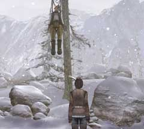

| 概要 | 地図 |
| 淡いヒント集 | ヒント集 | 的確なヒント集 |
| 攻略最短ルート |
| 場所選択に戻る |
雪山
川

・なぜユーキーは吠えているのか? ・対岸に行く必要はあるか? あるのならば、どうすればよいか? ・ユーキーの気を紛らわす物は何か?
崩れた橋

・橋の先に行く必要があるか? ・あるのならば、どうやって渡ればよいか? ・ユーキーも連れて行くべきか?
熊
・熊が現れた。どうすればよいか? ・戦うべきか? 勝てるか? ・熊はなぜここに来たのか分かるか? ・どうすれば立ち去ってくれるのか、分かるか?
木につるされたボリス
 ・どうやっておろせばよいか? 手は届かない。 ・彼はあなたの声に気づいていない。それは、なぜか? ・どうすれば彼を起こすことができるだろうか?
| 次へ >> |
|
| 場所選択に戻る |
| 概要 | 地図 |
| 淡いヒント集 | ヒント集 | 的確なヒント集 |
| 攻略最短ルート |
Syberia II
| 目次へ戻る | ページの上部へ |